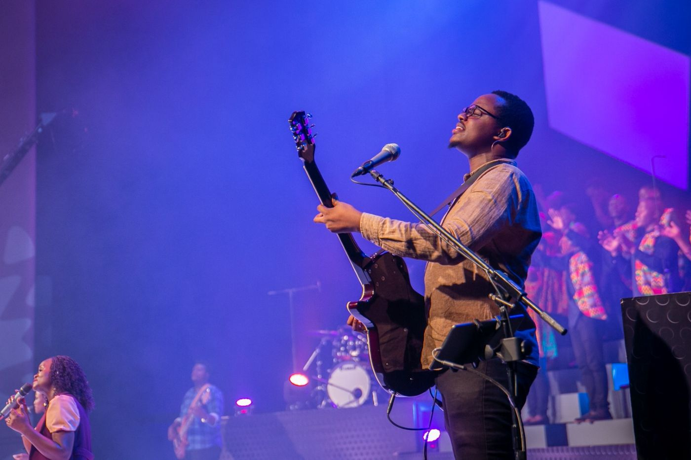
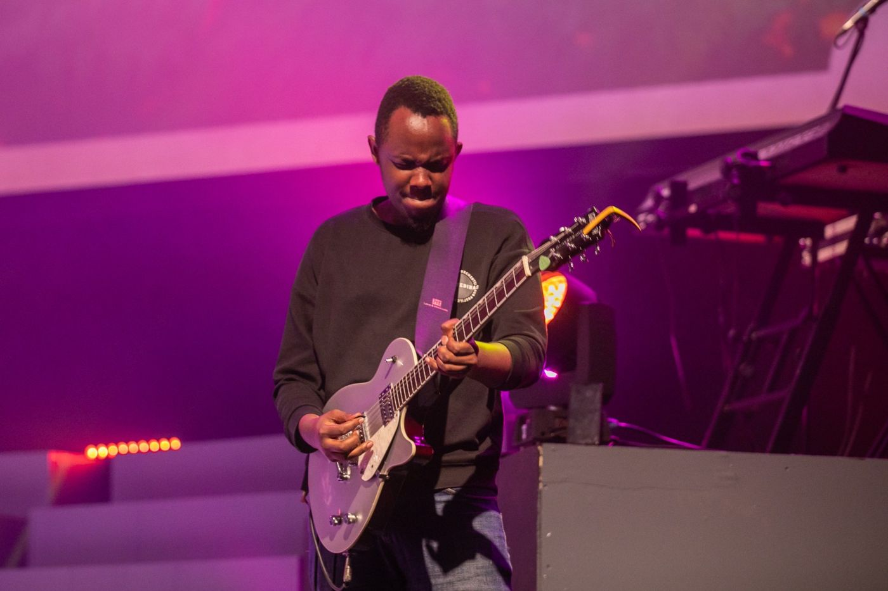
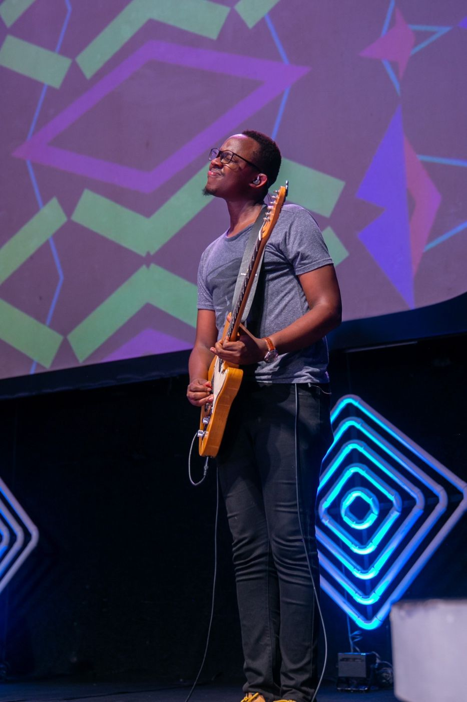
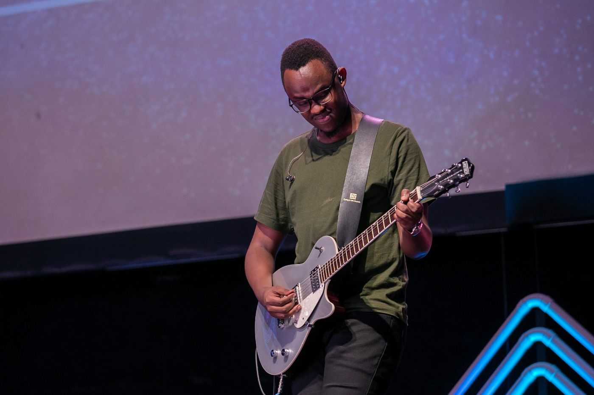

Kampala, Uganda
David
Izooba
A guitarist and a servant at heart. Grateful for every season, and for every person I've been given to walk with.
I'm David.
I've been part of Watoto Church since I was eight years old, and I've been playing guitar for close to fifteen years.
Most of what I know, I learned by serving alongside people far more gifted than me: in rehearsal rooms, on Sunday mornings, and in quiet conversations after. Music opened the door, but people are what keep me here.
I love the Word, I love worship, and I love seeing people grow into the best version of who God made them to be.
- People
God has called us for people. He has not called us for ourselves.
- Seasons
I believe in transition and in seasons. Each one is preparing us for the next.
- Shepherding
Mentoring, discipling and shepherding people is the work that lasts.
- Systems
Good hearts need good structures. I love building systems that actually work.
- Worship
Grounded in the Word, and still in awe of worship.
Songs I've been privileged
to play on.
Grateful to have played guitar on these projects, alongside many gifted musicians.

Send Us
Watoto Music · Live
Love Never Fails
Watoto · Live
Better Days
Watoto Children's Choir
Child's Praise
Joseph Lagen · incl. "Near Near Here", "Night Meets Day"
LENG
Anna Makula · incl. "Near"Also thankful to have played with Benjamin Spartos, and to have served alongside Bethany. Full credits on Muso.ai.
At Watoto Church.
Photos of David Izooba playing guitar during services at Watoto Church, Kampala, Uganda.



Thoughts on seasons,
people & worship.
The journal is open
A place to share what I'm learning about faith, leadership, mentorship and the seasons God takes us through.